Review pack for Kam · 2026-10-09
Lane 3c is merged (PR #62, main e33bdad). It passed the tier-1 QA gate in two rounds. Round 1 found one blocking problem and two small ones; all three were fixed, and round 2 gave GO WITH NOTES. It is not on the demo yet. Deploying it needs your look first (backlog #251).
What changes for users:
Every new or changed string you can see, as built. “—” means a new string. Screens: S2 = New engagement, S3 = Frameworks, S4 = Device estate.
| # | Screen | Was → Now |
|---|---|---|
| 1 | S2 section 3; set-up card sub-heading | “HPSM Policy Details” → “Policy” |
| 2 | S2 section 3 | “The one HPSM policy this engagement produces.” → “The policy this engagement builds. Choose it from the defined policies; its target fills in.” |
| 3 | S2 section 3 (no policies) | — → “The policy this engagement builds. The content release defines no policies yet.” |
| 4 | S2, set-up card | — → “Policy (required)” |
| 5 | Picker placeholder | — → “Choose a policy…” |
| 6 | Picker hint | — → “The policies the running content release defines.” |
| 7 | Notice title (no policies) | — → “No policies to choose from yet” |
| 8 | Notice text | — → “The content release this service runs defines no policies yet, so the engagement is created without one. It shows as “Not chosen”.” |
| 9 | Validation | — → “Choose the policy.” |
| 10 | Validation (stale draft or clone) | — → “Choose the policy again: the one saved is not defined by the running content release.” |
| 11 | Validation (loading) | — → “Wait until the list of policies has loaded.” |
| 12 | Validation (error) | — → “The list of policies could not be loaded. Try again before saving.” |
| 13 | Reason under Save / Complete | — → “Not available until the list of policies loads: use Try again above.” |
| 14 | Picker loading | — → “Loading the defined policies…” |
| 15 | Target panel | — → “Target” + pill “fills in from the policy” |
| 16 | Target panel | — → row labels “Framework”, “Edition”, “Maturity level”, “Output” |
| 17 | Target panel, Details | — → “Level One” / “Level Two” / “Level Three” |
| 18 | Target panel | — → “Not applicable” (a target with no Essential Eight level) |
| 19 | Output row | — → “HPSM policy, named after this engagement. Its HPSM version is set on Device estate.” |
| 20 | Panel hint | — → “The Frameworks step opens with this selection. You can add frameworks there.” |
| 21 | Details, S4, Dashboard, list, S2 review | — → “Not chosen” (neutral pill) |
| 22 | Reason | — → “The content release defines no policies yet.” |
| 23 | Reason (Details, S4) | REPLACED built as “Created before policies were defined.” → now “No policy was chosen.” (gate fix F3: the old words could be false) |
| 24 | Reason (Guided start waiting) | — → “Chosen when an Expert completes the set-up.” |
| 25 | Reason (policy no longer defined) | — → “The running content release does not define this policy.” (shown after the key; see F5) |
| 26 | Details Target | — → “{Target} · changed on Frameworks: Level n” |
| 27 | Details Target (roles without the list) | — → “{Target} · as selected on Frameworks” |
| 28 | Details | — → “From Frameworks” = “Essential Eight, Level n” |
| 29 | Details | card “HPSM policy” → sub-heading “HPSM output” |
| 30 | Details | “Policy name” → “HPSM policy name”; “Target HPSM version” → “HPSM version”; instance “Not set” → muted “None” |
| 31 | Details | — → link “Edit on Device estate” (now shown only where Device estate is editable) |
| 32 | Details edit form | “The policy name and target version are not editable here: … The target version is set on Device estate.” → “The policy, the HPSM policy name and the HPSM version are not editable here: … The HPSM version is set on Device estate.” |
| 33 | S4 title | “Device estate and HPSM target” → “Device estate and HPSM output” |
| 34 | S4 subtitle | “Define the device groups and the HPSM version this engagement's policy targets.” → “Describe the customer's device groups, and the HPSM policy this engagement's policy is delivered as.” |
| 35 | S4 card | “Target HPSM version” → “HPSM policy” |
| 36 | S4 card lead | — → “The policy is {name}. HPSM is where it is delivered.” / “[Not chosen] {reason} HPSM is where the policy is delivered.” |
| 37 | S4 | — → “HPSM policy name” + hint “The name requested in HPSM. It cannot be changed yet. The Policy Bridge checks the final name.” |
| 38 | S4 | — → “HPSM instance” + “Not selectable. HPSM instances cannot be listed yet, so the policy is delivered without one.” |
| 39 | Set-up card | “…Set its environment, its policy's name and its customer approvers…” → “…Set its environment, its policy and its customer approvers…” |
| 40 | S2 rail step 3 | “Policy name and target version” → “The defined policy and its target” |
| 41 | Dashboard, Engagements | Policy cell “{HPSM name}” → “{target, or Not chosen}” + “HPSM: {HPSM name}” |
| 42 | Dashboard coverage card | “Not available yet” + “Coverage needs framework mappings… so no percentage is shown.” → “Per engagement: the Essential Eight requirements at its level that its answers show as met, or that an approved exception covers.” |
| 43 | Coverage words | — → “No coverage yet: the content release maps no requirements.” · “No coverage: Essential Eight is not selected on Frameworks.” · “Coverage is not shown to your role.” · “No requirement is in scope at this level.” |
| 44 | Dashboard, S3 | — → “{met} of {in scope} met · {n} not answered”; screen-reader label “… met, … partly, … not met, … not answered, of …”; legend “Met · Partly · Not met · Not answered” |
| 45 | S3 summary | — → “Met on computers, not printers: outside this policy” · “Beyond the Essential Eight: {a} of {n} items answered” · “Whether the printers are reachable from the internet is not answered yet, so the requirements for both cases are counted.” · “Essential Eight at Level n” · “Coverage by strategy” (screen reader) |
| 46 | S3 | “…share of a framework's mapped controls… The provisional content release maps no controls…” → “Coverage is the share of the Essential Eight requirements at the chosen level that the answers show as met, or that an approved exception covers.” + one of: “The content release this service runs maps no requirements yet, so no coverage is shown.” / “Essential Eight is not selected for this version, so no coverage is shown.” + “Other frameworks have no mapping yet, so they show “—”.” |
| 47 | S3 table note; E8 edition | “Coverage shows “—”; the coverage summary says why. Editions are typed as published; the content release does not list editions yet.” → “The coverage summary says how coverage is counted. The Essential Eight edition comes from the policy; other editions are typed as published.” (with no target: “…Editions are typed as published; the content release does not list editions yet.”); E8 edition cell shows “{edition}” + “From the policy” |
S3’s “Controls with a mapping (of 123)” and “Average coverage” stats (always “—”); the Dashboard’s “Not available yet” banner; S2’s “Policy name (required)”, “Target HPSM version (required)”, “Target HPSM instance” and their hints, and the review row “HPSM version”; the set-up card’s “Policy name (required)” and hint.
Layouts with no mock, or where the build differs from the mock. Screenshots are Mac Chrome at the merged code before round 2’s two small fixes (the Edit link’s role rule, and row 23’s words).
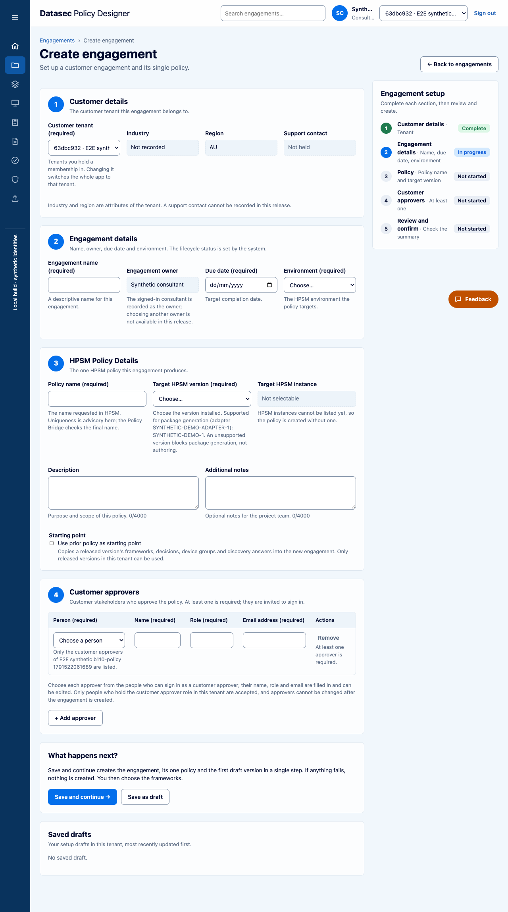
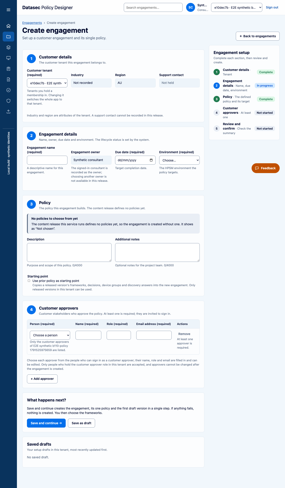
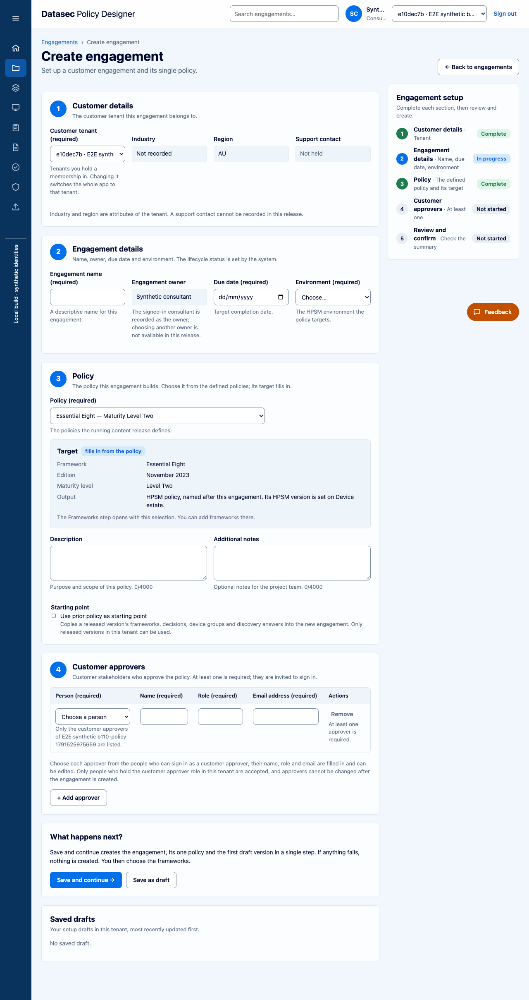
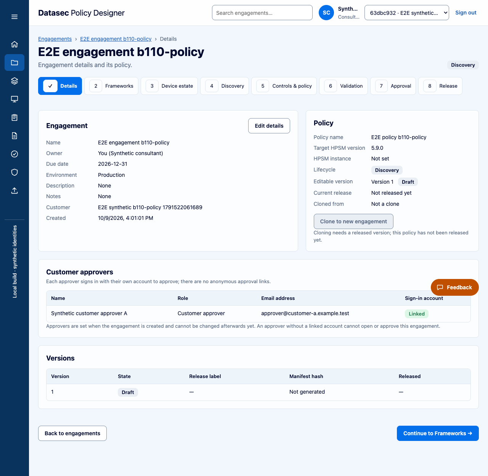
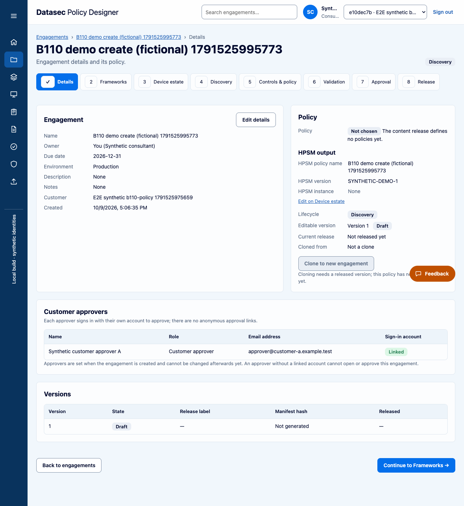
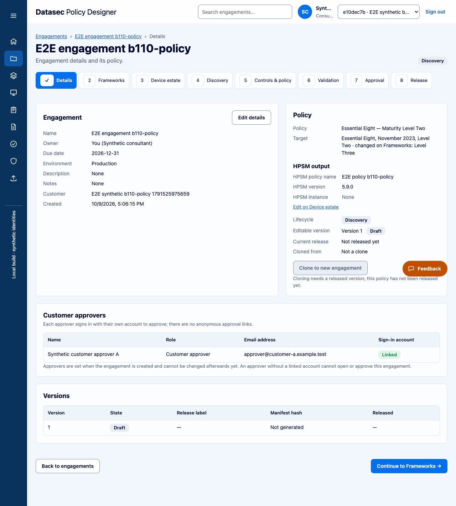
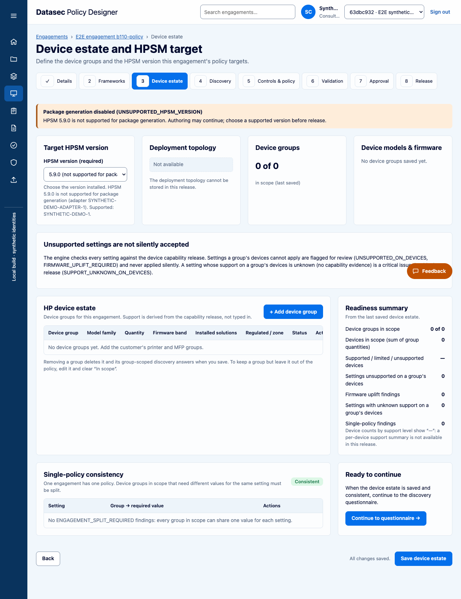
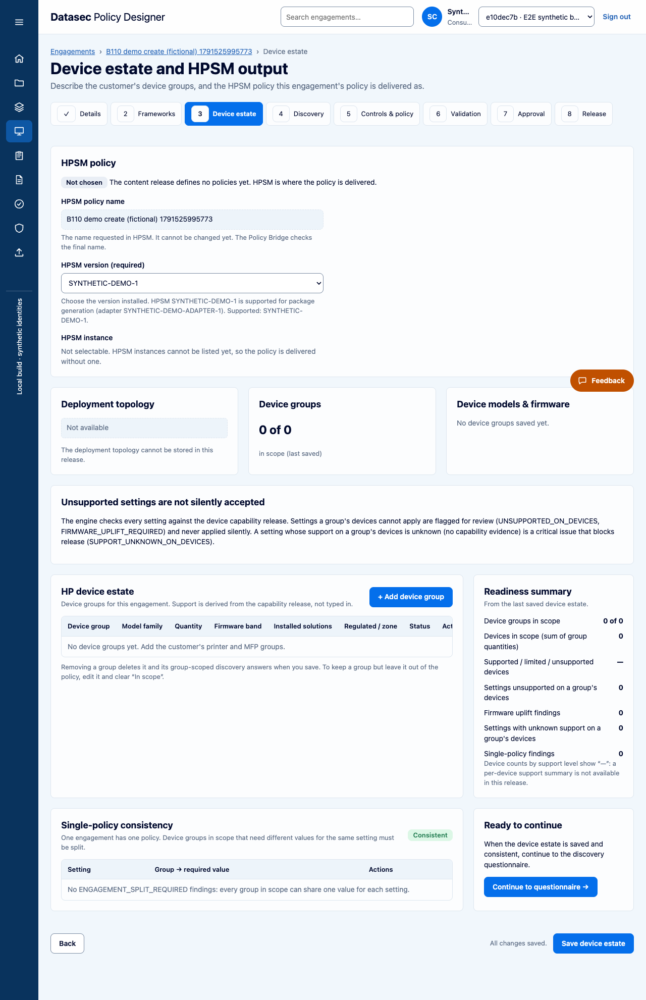
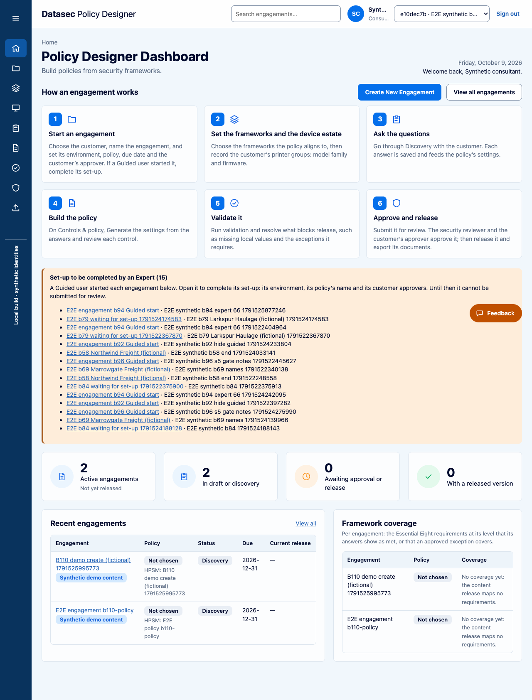
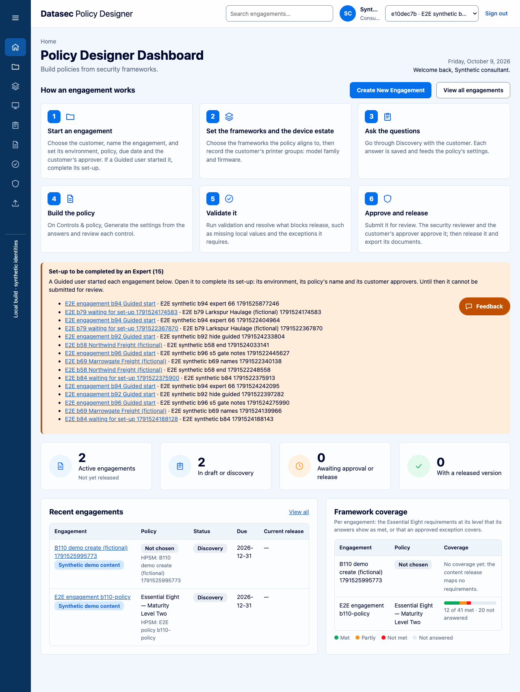
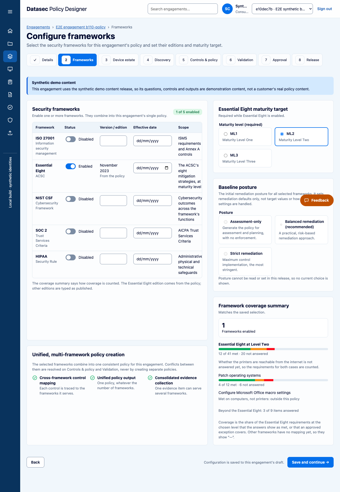
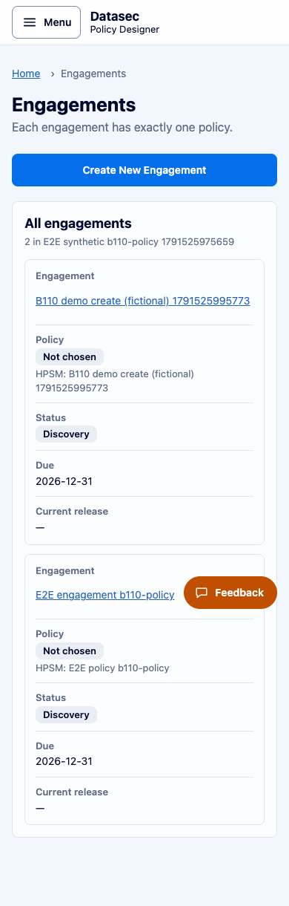
None of these blocked the merge. Round 2 confirmed none changed.
The set-up card reuses New engagement’s “no policies” notice, which says “…so the engagement is created without one.” On the set-up card the engagement already exists. Suggested: a set-up version, such as “…so the set-up completes without one.”
When an engagement’s saved policy is no longer defined, the screen shows the key and the sentence with no break: “e8-retired-2022-ml2 The running content release does not define this policy.” Same on Details, Device estate and the Dashboard. Your punctuation, for example brackets around the sentence.
Source engagement: policy at Level Two, raised to Level Three on Frameworks. Its clone starts with the policy pre-filled and shows Level Two, and the clone is stored at Level Two. The Level Three is dropped, and nothing on screen says so. Keep it and add a line, or carry the level over: your call.
Before, a clone copied the source’s HPSM policy name (and a split used “source name – group”). Now both take the new engagement’s name. The HPSM version should become the newest supported one, but that half could not be seen on today’s data (only one version exists); it stays a ticket.
Your earlier feedback asked for no mention of HPSM on this screen. It went from 7 lines to 1 (the Environment hint “The HPSM environment the policy targets.”), and to 2 once a policy is chosen (the Output row “HPSM policy, named after this engagement…”). Both describe the HPSM output, so they were kept. Remove, reword or keep.
With no policies defined, an Expert set-up now sends only environment and approvers. Before, it sent the policy name. The stored name is the same unless someone had edited it. Logged beside #260; no decision needed.
With no policies to choose, step 3 “Policy” shows Complete before the user does anything, and before steps 2 and 4. Defensible, since there is nothing to do, but it reads odd. Complete, or a neutral state?
(a) On phones the New engagement rail sits after the form (as before) and moves up about 345 px because section 3 is shorter; the mock hides it on phones. (b) On phones, Device estate’s HPSM version picker is now below the first screen. Ordinary scrolling, no sideways scroll. (c) The HPSM instance line on Device estate is a plain muted sentence, not a field with a hint.
The Dashboard and Engagements list show “Not chosen” with no reason. Reasons appear on Details and Device estate only. The mock asked only for the pill; the brief expected a reason everywhere. Add reasons to lists, or keep them clean?